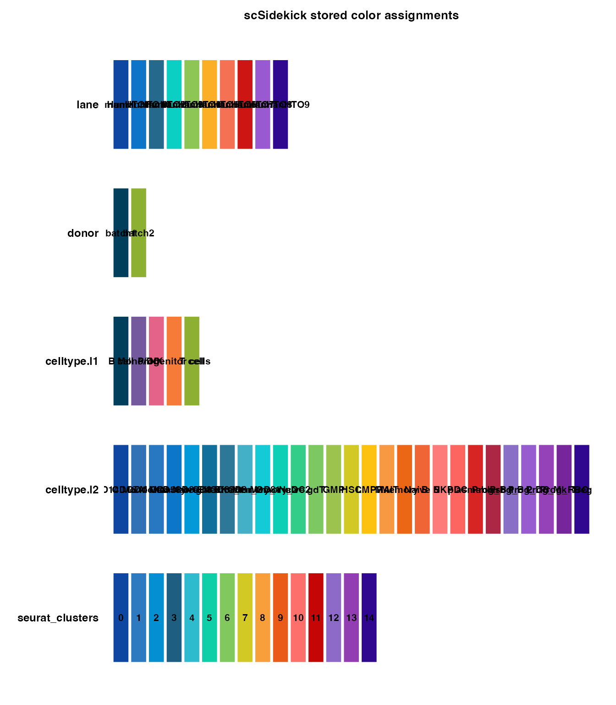

scSidekick - Getting Started: PrepObject, ShowColors, GetColors
01_getting_started.RmdOverview
scSidekick is built around one idea: configure your project once, and every downstream step inherits that configuration automatically - not just colors and layouts, but a full reproducibility trail.
After a single setup call, the following come for free as byproducts of ordinary plotting and analysis:
-
Consistent, publication-ready figures - one palette
and factor ordering shared across every plot, single-cell and spatial
alike, with no repeated
scale_color_manual()orgroup.byarguments. -
A plain-text
.legendsidecar written next to every saved figure, describing exactly what was plotted - so you never reverse-engineer a figure at paper time (see Reporting & Utilities). -
A draft methods paragraph reconstructed from the
Seurat command history with
ExtractMethods(). -
A recoverable session log -
start_session_logger()captures the commands and figures of a session so an interrupted analysis can be rebuilt, andsummarize_r_session()turns it into a clean report and a runnable R script. -
A one-call slide deck -
create_analysis_pptx()assembles your saved figures into a sectioned PowerPoint for the next lab meeting.
PrepObject() is the engine that makes all of this
possible. Call it once after clustering and it stores a color palette,
factor-level ordering, an output directory, and default plotting
parameters directly inside the Seurat object at
seurat_object@misc$nk_settings. Every downstream scSidekick
function reads from that slot when its own arguments are left
NULL - so you set your project’s look and behavior a single
time, and never repeat it. Learn PrepObject() here; the
rest of the package builds on it.
In short: run PrepObject() once ->
consistent figures, auto-written legends, a methods paragraph, a
recoverable session log, and a slide deck all follow automatically.
Installation and demo data
if (!require("devtools", quietly = TRUE)) install.packages("devtools")
devtools::install_github("nourabdelfattah/scSidekick")We use bmcite, a bone marrow CITE-seq dataset from
SeuratData. It is small (~30 k cells) and already comes with rich
metadata - lane, donor,
celltype.l1, and celltype.l2 - so we can
demonstrate multi-variable workflows without manufacturing fake
columns.
1. Basic PrepObject call
PrepObject() registers one or more metadata variables
and assigns each level a distinct color from scSidekick’s built-in
palette. Pass a character vector to handle all your grouping columns at
once.
bmcite <- PrepObject(bmcite,
variables = c("lane", "donor", "celltype.l1", "celltype.l2"))After this call bmcite@misc$nk_settings holds a color
map for each variable. Each variable gets its own independent palette
and levels are stored as ordered factors, so axes and legends always
appear in a consistent order. Inspect them with
ShowColors() or GetColors() (see below).
2. Setting default plotting parameters
group.by, split.by,
output_dir, object_name, and
subset_name store package-wide defaults that every plotting
function inherits when those arguments are left NULL.
bmcite <- PrepObject(bmcite,
variables = c("lane", "donor", "celltype.l1", "celltype.l2"),
group.by = "celltype.l1",
split.by = "donor",
output_dir = "./bmcite_Analysis/Figures",
object_name = "bmcite",
subset_name = "AllCells")With these stored, a bare PlotDimPlots(bmcite) will
group by cell type, split by donor, and save to the specified folder -
no repeated arguments.
3. Standard Seurat processing
You can add new variables (like seurat_clusters) to
PrepObject later, after running the clustering pipeline.
Here we process the object and use Determine_nDims() to
pick the number of dimensions automatically.
Determine_nDims() applies two heuristics to the PCA
variance explained and returns the more conservative (lower) of the two.
Blue numbers are the selected dimensions; orange are discarded.
result <- Determine_nDims(bmcite, reduction = "pca")
result$plot
4. Inspect registered colors with ShowColors()
ShowColors() renders a swatch grid for every variable
stored in nk_settings - one panel per variable, levels on
the y-axis. This is the fastest sanity check before generating
figures.
ShowColors(bmcite)
5. Custom colors
Override any variable’s palette with a named vector. Any level you omit falls back to the auto-palette, so you only specify the colors you care about.
my_cols <- c("CD4 T" = "#E41A1C", "CD8 T" = "#377EB8", "NK" = "#4DAF4A",
"B" = "#984EA3", "Mono" = "#FF7F00")
bmcite <- PrepObject(bmcite,
variables = "celltype.l1",
custom_colors = list(celltype.l1 = my_cols))6. Controlling factor level order
var_levels sets the display order for any variable,
controlling legend entries, axis ticks, and split panels. Levels you
don’t list are appended at the end.
bmcite <- PrepObject(bmcite,
variables = c("celltype.l1", "donor"),
var_levels = list(
celltype.l1 = c("CD4 T", "CD8 T", "NK", "B", "Mono", "DC", "other T"),
donor = c("d1", "d2", "d3", "d4", "d5", "d6", "d7", "d8")
))7. Retrieving colors programmatically with
GetColors()
GetColors() returns the named color vector for a
variable, ready to pass into scale_color_manual() or any
scSidekick colors argument.
# Single variable
ct_cols <- GetColors(bmcite, "celltype.l1")
ct_cols## B cell Mono/DC NK Progenitor cells
## "#003F5C" "#74599E" "#E46388" "#F77B38"
## T cell
## "#8DB032"## [1] "lane" "donor" "celltype.l1" "celltype.l2"
## [5] "seurat_clusters"8. Forcing a rebuild
Once PrepObject() has run, subsequent calls skip
re-computation unless you pass force = TRUE. Use this after
adding new metadata or changing cluster assignments.
bmcite$Assignment <- dplyr::case_when(
bmcite$celltype.l1 == "CD4 T" ~ "Helper T",
bmcite$celltype.l1 == "CD8 T" ~ "Cytotoxic T",
TRUE ~ bmcite$celltype.l1
)
bmcite <- PrepObject(bmcite,
variables = c("celltype.l1", "celltype.l2", "seurat_clusters", "Assignment"),
force = TRUE)9. Recommended full pipeline
This is a reference workflow for a real multi-sample project. Every step uses a scSidekick function; the Seurat processing steps in the middle are standard. Nothing here runs - it is a template you copy and adapt.
library(scSidekick)
library(Seurat)
library(harmony)
# ── 1. Load raw 10x data ─────────────────────────────────────────────────────
SeuratObj <- LoadSamplesRNA(
sample_dirs = list.files("path/to/10x_dirs", full.names = TRUE),
sample_names = c("HC1", "HC2", "AD1", "AD2"),
metadata = data.frame(
Sample = c("HC1", "HC2", "AD1", "AD2"),
Group = c("HC", "HC", "AD", "AD"),
Batch = c(1, 1, 2, 2)
)
)
# ── 2. QC ─────────────────────────────────────────────────────────────────────
PlotQCMetrics(SeuratObj, group.by = "Sample", output_dir = "./Figures/QC")
# Inspect the QC plots, then filter:
SeuratObj <- subset(SeuratObj, subset = DoubletStatus == "singlet" & miQC.keep == "keep")
# ── 3. Normalize & reduce ─────────────────────────────────────────────────────
SeuratObj <- NormalizeData(SeuratObj) %>%
FindVariableFeatures(nfeatures = 2000) %>%
ScaleData(vars.to.regress = c("S.Score", "G2M.Score", "percent.mt")) %>%
RunPCA(npcs = 50)
# ── 4. (Optional) Harmony batch correction ────────────────────────────────────
SeuratObj <- harmony::RunHarmony(SeuratObj, group.by.vars = c("Sample", "Batch"))
# ── 5. Choose dimensions ──────────────────────────────────────────────────────
dims <- Determine_nDims(SeuratObj, reduction = "harmony") # or "pca"
dims$plot # inspect the elbow
SeuratObj <- RunUMAP(SeuratObj, dims = 1:dims$n_dims, reduction = "harmony")
SeuratObj <- FindNeighbors(SeuratObj, dims = 1:dims$n_dims, reduction = "harmony")
SeuratObj <- FindClusters(SeuratObj, resolution = 0.5)
# ── 6. Register colors & defaults ─────────────────────────────────────────────
SeuratObj <- PrepObject(SeuratObj,
variables = c("Sample", "Group", "seurat_clusters"),
group.by = "seurat_clusters",
split.by = "Sample",
output_dir = "./Figures",
object_name = "MyProject")
ShowColors(SeuratObj)
# ── 7. Explore & visualize ────────────────────────────────────────────────────
PlotDimPlots(SeuratObj,
group.by = c("seurat_clusters", "Sample", "Group"),
show_trend = TRUE)
# ── 8. Marker genes & annotation ──────────────────────────────────────────────
GroupHeatmap(SeuratObj, group.by = "seurat_clusters")
markers_df <- data.frame(
Genes = c("CD3E", "CD4", "CD8A", "NKG7", "CD79A", "LYZ", "S100A8"),
CellType = c("T", "T", "T", "NK", "B", "Mono","Mono")
)
SplitDotPlot(SeuratObj, markers_df = markers_df, group.by = "seurat_clusters")
de <- RunWilcoxAUC(SeuratObj, group.by = "seurat_clusters")
SeuratObj <- CellTypeAssignmentHelper(SeuratObj,
markers = de,
cluster_column = "seurat_clusters",
sctype_tissues = "Immune system",
output_dir = "./Figures/Annotation")
# ── 9. Finalize labels, update PrepObject ─────────────────────────────────────
SeuratObj$CellType <- dplyr::recode(SeuratObj$seurat_clusters,
`0` = "CD4 T", `1` = "Monocyte", `2` = "NK", `3` = "B", ...)
SeuratObj <- PrepObject(SeuratObj,
variables = c("seurat_clusters", "Sample", "Group", "CellType"),
group.by = "CellType",
force = TRUE)
PlotDimPlots(SeuratObj, group.by = c("CellType", "Sample", "Group"), show_trend = TRUE)
# ── 10. Feature maps ──────────────────────────────────────────────────────────
PlotFeaturePlots(SeuratObj,
features = c("CD3E", "CD4", "CD8A", "NKG7", "CD79A", "LYZ"),
split.by = "Sample")
# ── 11. Composition ───────────────────────────────────────────────────────────
PlotTrendLabeled(SeuratObj,
stat.by = "CellType",
group.by = "Group",
split.by = "Sample")
# ── 12. Pathway analysis ──────────────────────────────────────────────────────
RunGSEA(SeuratObj,
group.by = "CellType",
split.by = NULL,
output_dir = "./Figures/Pathways")
# ── 13. Cell-cell communication ───────────────────────────────────────────────
cc_results <- RunCellChat(SeuratObj,
cell.by = "CellType",
group.by = "Group",
groups = c("HC", "AD"),
output_dir = "./Figures/CellChat")
CompareCellChat(
cellchat_list = cc_results,
output_dir = "./Figures/CellChat/Comparison")
# ── 14. Assemble slide deck ───────────────────────────────────────────────────
create_analysis_pptx(output_dir = "./Figures", object_name = "MyProject")Parameter reference
| Parameter | Type | Default | Description |
|---|---|---|---|
variables |
character vector | required |
meta.data column names to register |
palettes |
character | "auto" |
Palette strategy; "auto" uses Nour18
|
reverse |
logical | FALSE |
Reverse color order for auto-assigned palettes |
custom_colors |
named list | list() |
Named color vectors per variable |
var_levels |
named list | list() |
Level orderings per variable |
group.by |
character | NULL |
Default grouping variable |
split.by |
character | NULL |
Default split variable |
output_dir |
character | NULL |
Default output directory |
object_name |
character | NULL |
Label used in saved filenames |
subset_name |
character | NULL |
Sub-label used in saved filenames |
force |
logical | FALSE |
Re-run even if nk_settings already exists |
See also
- Vignette 02:
Determine_nDims()in the context of dimensionality reduction - Vignette 03:
PlotDimPlots()- UMAP visualization using colors fromPrepObject - Vignette 07: Spatial Transcriptomics - the same settings drive
combined single-cell and spatial figures (
PlotMasterMaps,GenerateMasterGeneMaps) - Vignette 12: Reporting & Utilities - the reproducibility layer
in full:
ExtractMethods(), the auto-written.legendsidecars, the session logger,create_analysis_pptx(), and theNour_pal()/Nour_cols()palette utilities
Session info
## R version 4.3.1 (2023-06-16)
## Platform: aarch64-apple-darwin20 (64-bit)
## Running under: macOS 15.6
##
## Matrix products: default
## BLAS: /Library/Frameworks/R.framework/Versions/4.3-arm64/Resources/lib/libRblas.0.dylib
## LAPACK: /Library/Frameworks/R.framework/Versions/4.3-arm64/Resources/lib/libRlapack.dylib; LAPACK version 3.11.0
##
## locale:
## [1] en_US.UTF-8/en_US.UTF-8/en_US.UTF-8/C/en_US.UTF-8/en_US.UTF-8
##
## time zone: America/Chicago
## tzcode source: internal
##
## attached base packages:
## [1] stats graphics grDevices utils datasets methods base
##
## other attached packages:
## [1] dplyr_1.1.4 stxBrain.SeuratData_0.1.2
## [3] pbmc3k.SeuratData_3.1.4 ifnb.SeuratData_3.1.0
## [5] bmcite.SeuratData_0.3.0 SeuratData_0.2.2
## [7] Seurat_5.2.1 SeuratObject_5.1.0
## [9] sp_2.1-3 scSidekick_0.1.0
##
## loaded via a namespace (and not attached):
## [1] RColorBrewer_1.1-3 rstudioapi_0.16.0 jsonlite_2.0.0
## [4] magrittr_2.0.3 spatstat.utils_3.1-0 farver_2.1.2
## [7] rmarkdown_2.29 fs_1.6.6 ragg_1.4.0
## [10] vctrs_0.6.5 ROCR_1.0-11 spatstat.explore_3.2-7
## [13] htmltools_0.5.8.1 sass_0.4.10 sctransform_0.4.1
## [16] parallelly_1.37.1 KernSmooth_2.23-22 bslib_0.9.0
## [19] htmlwidgets_1.6.4 desc_1.4.3 ica_1.0-3
## [22] plyr_1.8.9 plotly_4.10.4 zoo_1.8-14
## [25] cachem_1.1.0 igraph_2.0.3 mime_0.13
## [28] lifecycle_1.0.4 pkgconfig_2.0.3 Matrix_1.6-5
## [31] R6_2.6.1 fastmap_1.2.0 fitdistrplus_1.1-11
## [34] future_1.33.2 shiny_1.11.1 digest_0.6.37
## [37] colorspace_2.1-1 patchwork_1.3.1 tensor_1.5
## [40] RSpectra_0.16-1 irlba_2.3.5.1 textshaping_0.3.7
## [43] labeling_0.4.3 progressr_0.14.0 spatstat.sparse_3.0-3
## [46] httr_1.4.7 polyclip_1.10-6 abind_1.4-8
## [49] compiler_4.3.1 withr_3.0.2 fastDummies_1.7.3
## [52] highr_0.10 MASS_7.3-60.0.1 rappdirs_0.3.3
## [55] tools_4.3.1 lmtest_0.9-40 otel_0.2.0
## [58] httpuv_1.6.16 future.apply_1.11.2 goftest_1.2-3
## [61] glue_1.8.0 nlme_3.1-164 promises_1.5.0
## [64] grid_4.3.1 Rtsne_0.17 cluster_2.1.6
## [67] reshape2_1.4.4 generics_0.1.4 gtable_0.3.6
## [70] spatstat.data_3.0-4 tidyr_1.3.1 data.table_1.15.4
## [73] spatstat.geom_3.2-9 RcppAnnoy_0.0.22 ggrepel_0.9.6
## [76] RANN_2.6.1 pillar_1.11.0 stringr_1.5.1
## [79] spam_2.10-0 RcppHNSW_0.6.0 later_1.4.2
## [82] splines_4.3.1 lattice_0.22-6 survival_3.5-8
## [85] deldir_2.0-4 tidyselect_1.2.1 miniUI_0.1.1.1
## [88] pbapply_1.7-2 knitr_1.45 gridExtra_2.3
## [91] scattermore_1.2 xfun_0.52 matrixStats_1.2.0
## [94] stringi_1.8.7 lazyeval_0.2.2 yaml_2.3.10
## [97] evaluate_0.23 codetools_0.2-20 tibble_3.3.0
## [100] cli_3.6.5 uwot_0.1.16 xtable_1.8-4
## [103] reticulate_1.35.0 systemfonts_1.0.6 jquerylib_0.1.4
## [106] dichromat_2.0-0.1 Rcpp_1.1.0 globals_0.16.3
## [109] spatstat.random_3.2-3 png_0.1-8 parallel_4.3.1
## [112] pkgdown_2.1.3 ggplot2_3.5.2 dotCall64_1.1-1
## [115] listenv_0.9.1 viridisLite_0.4.2 scales_1.4.0
## [118] ggridges_0.5.6 purrr_1.0.4 crayon_1.5.2
## [121] rlang_1.1.6 cowplot_1.2.0.9000